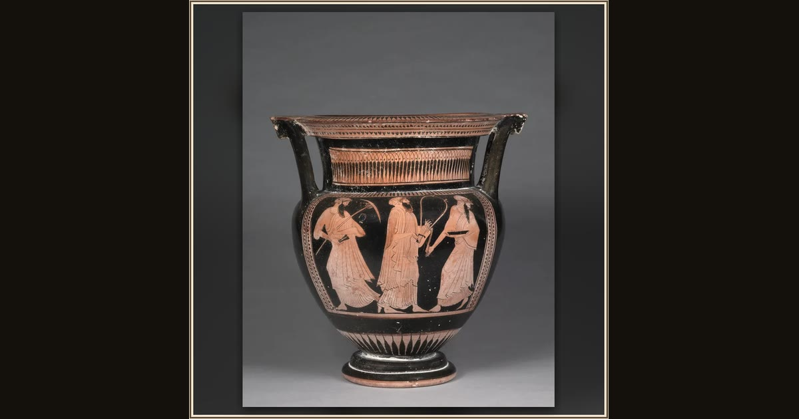

Red-Figure Column Krater (Mixing Vessel): Komos (Revel)
Pig Painter (Greek, Attic, active c. 480–460 BCE) · c. 470–460 BCE · cma
Three bearded revellers cross an Attic wine-mixing vessel, recalling the crowd of komasts who enter Agathon's symposium and throw its drinking into disorder. (223b) Explore its place in Plato's Dialogues, Symposium, section 255.